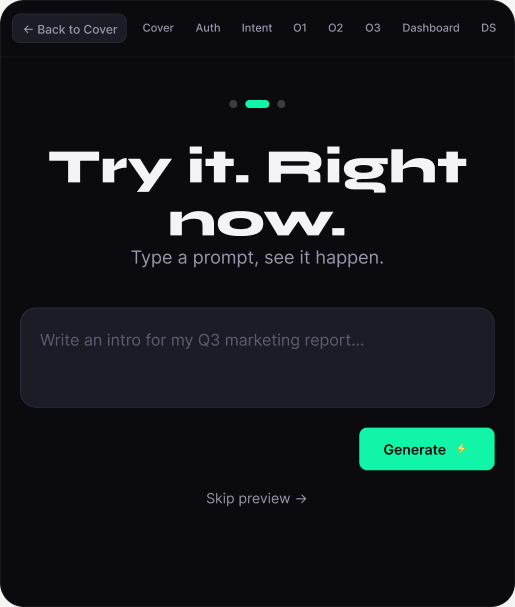
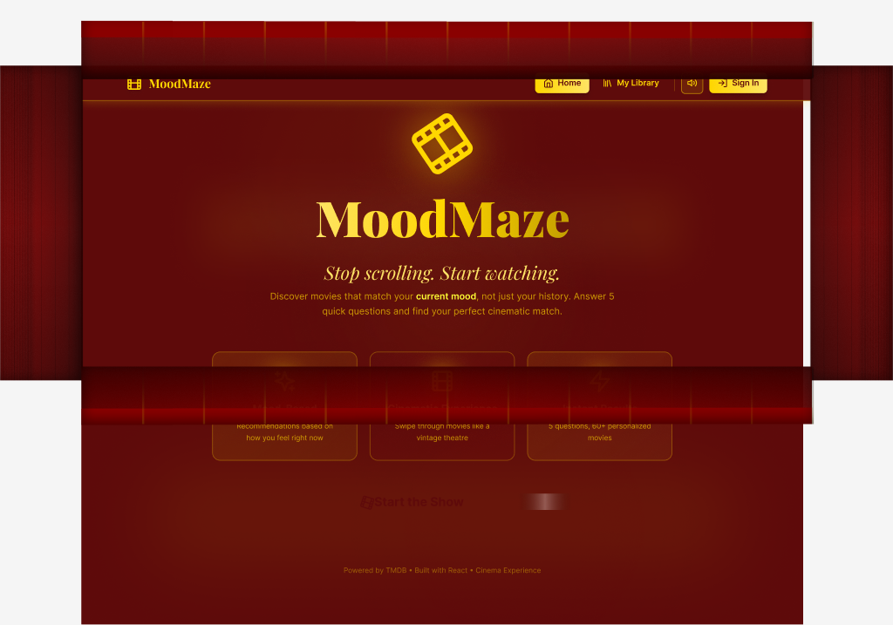
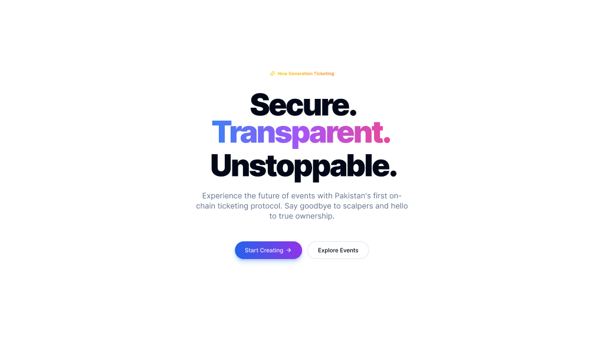
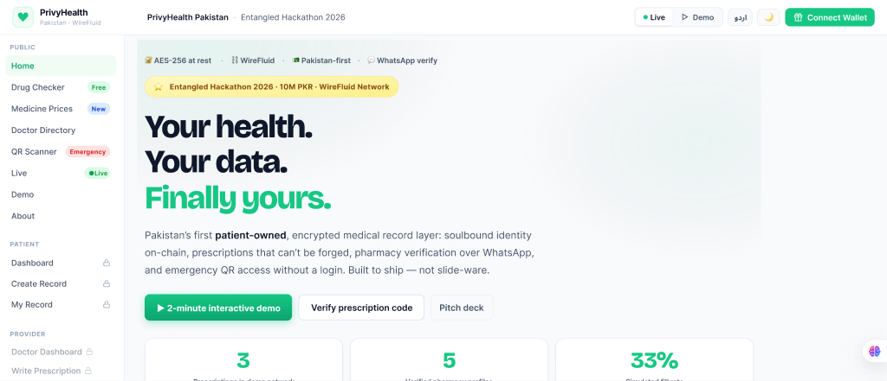
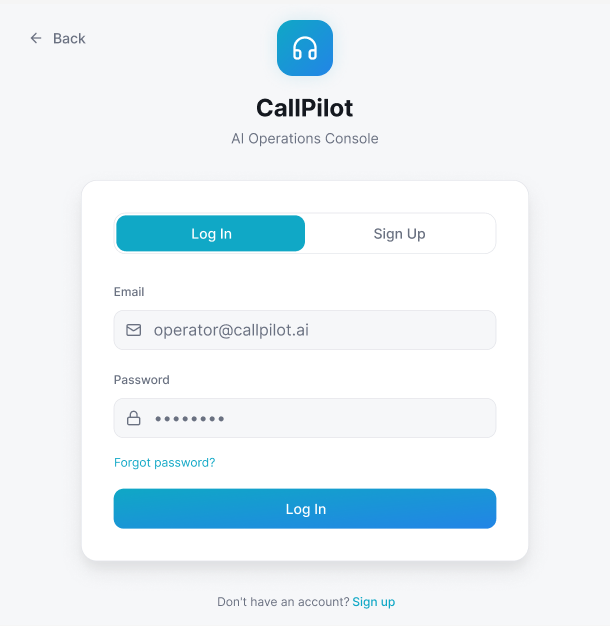

CREATIVE HIGHLIGHT · GENERATIVE AI
Experimenting with generative AI to build content, storyboards, and visual narratives — prompt to pixel, frame by frame.
View Full Lab
9:16
[ ACT I — THE OPENING SCENE ]
$ █
→ Saadia Asghar // AI Intern & Digital Strategist
$
→ status: building AI & communities · GIKI '28 · PK
$
→ scenes loaded: AI research · design · leadership · brand
Every story needs someone willing to learn out loud. Mine starts at GIKI — a Data Science undergraduate & AI Intern who bridges structured knowledge representation with creative communication.
From researching Knowledge Graph grounding and mitigating RAG hallucinations to leading campus communities for Replit and Canva, I build at the intersection of AI engineering and community growth.

This is the chapter where the protagonist stops lurking and starts building in public — sharing data science insights and hackathon wins on LinkedIn, while the next act unfolds on Instagram: tech content, reels, and stories that make complex ideas feel human.
"Building with purpose — Taking risks — Learning out loud"
I'm Saadia, a Data Science undergraduate at GIKI. I'm passionate about using data to solve meaningful problems and learning by building projects that create real impact.
Hackathon Winner · GIKI '28 · Top 10 MIT HackNation · Top 5 Finalist @ Vyrothon
Now building my next chapter on Instagram — tech content that breaks down data science, AI, and the tools I use every day. Follow along as the story moves from LinkedIn essays to short-form reels.
Experimenting with generative AI to build content, storyboards, and visual narratives — prompt to pixel, frame by frame.
View Full LabOn the creative side — building content, sharing my story, and showing up as part of campus communities. Always willing to spread the word and amplify ideas that matter.
Vyrothon Top 5 · MIT HackNation Top 10 · BASE Web3 3rd · HackaGIKI 2nd
Now looking to make tech content on @s._bytes — reels, carousels, and behind-the-scenes of building in data science & AI.
Collaboration on Data Science & AI projects · Marketing & content strategy roles · Internships & research roles · On-site, Hybrid, or Remote (Pakistan)
Behind the campaigns and the captions lives a quieter experiment — using generative AI to sketch storyboards, shape visuals, and prototype content before it ever hits a feed. This is where I play: turning rough ideas into motion, frame by frame.
Prompt & Concept
Seed the story — mood, hook, visual direction.
Storyboard
Generative AI frames the narrative arc.
Render & Refine
Motion, polish, ready for the feed.
Campus Ambassador at atomcamp — ideating and producing educational video reels that break down data science concepts, AI ethics, and technical roadmaps for a wider student audience.
Promoted to the Executive Council to lead marketing operations. Responsible for lead generation, team scaling, brand messaging, and directing academic/research activities.
• Promoted from Student Officer of Education.
• Spearheaded lead generation campaigns for events and workshops.
• Organized technical academic research activities and study programs.
• Part of the first core team establishing strategic execution guidelines.
Lead marketing for GIKI's Microsoft Learn Student Ambassadors chapter — managing the club's Instagram and LinkedIn presence, content planning, and community outreach across platforms.
Ranked 1st in Product Design opening round out of 500+ global entries. Conceptualized user presence layouts and storytelling interfaces at the National Science & Technology Park (NSTP).
Promoted to Associate. Led visual identity and asset creation, producing 30+ visual assets using Canva and Figma to increase digital engagement by 40% while reducing turnaround time by 25%.





Exploring the limits of language models and retrieval-augmented architectures. Bridging structural knowledge representation with dynamic context generation.
Building and optimizing AI pipelines with a focus on Natural Language Processing (NLP) and Retrieval-Augmented Generation (RAG). Working on improving contextual retrieval and prompt engineering methodologies.
Conducting ongoing research focused on mitigating memory hallucinations in RAG architectures. Investigating how structured Knowledge Graphs can ground language models to ensure highly accurate, context-aware, and factually verified responses.
Stepping onto competitive stages, organizing technical symposiums, and building developer spaces. A brief timeline of hackathons, student workshops, and collaborative community events.
Collaborated in a high-intensity global arena to build rapid prototypes, addressing real-world challenges through data science and AI applications.
Led team ideation and visual strategy at Vyro's major AI hackathon, winning 1st place in the initial design round and finishing in the Top 5.
Managed communications and technical setup for Softcom '25, facilitating GIKI's flagship software and computing competition.
Volunteered in teaching and coordination roles for the ACM and ICPC '25 joint workshop, introducing C++ fundamentals to incoming student cohorts.
Drove outreach and coordination for Remotebase Hackfest 3.0 at GIKI, facilitating applications and guiding 300+ students through the hackathon.
Served as an organizing volunteer for the Leadership & Entrepreneurial Society's national event, managing guest relations and logistics.
$ cat skills_manifest.json
// AI & Research Stack
// Content & Marketing Strategy
// Design Stack
// Certifications
$ _